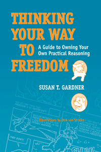

An appealing new guide to critical thinking for college students
An appealing new guide to critical thinking for college students


 An appealing new guide to critical thinking for college students
An appealing new guide to critical thinking for college students

|  |
Thinking Your Way to FreedomA Guide to Owning Your Own Practical ReasoningIllustrations by Dirk van StralenSusan T. Gardnerpaper EAN: 978-1-59213-867-8 (ISBN: 1-59213-867-5) |
�Freedom is a key philosophical idea that is taken seriously in this book. Importantly, freedom is also an idea that is intrinsically interesting to students. The author pulls students into the text by inviting them to view their own status as free agents and as critical thinkers.�
—Richard (Mort) Morehouse, Viterbo University
Thinking Your Way to Freedom is a critical-thinking textbook with a difference. Rather than focusing exclusively on improving college students� academic achievement, Susan Gardner seeks to dramatically change how students think through issues that are important in their lives beyond school. Gardner created 66 original and entertaining comic strips�featuring her dogs, Diva and Ben�that add a light touch as they encourage intellectual and personal autonomy. Through a clear step-by-step method of practical reasoning, students are taught how to think impartially and how to neutralize invisible biases that limit their freedom of thought and action. With the help of Diva and Ben, readers learn to evaluate the strengths of arguments and to recognize fallacies, all the while avoiding the paralyzing effects of relativism.
Thinking Your Way to Freedom includes the writing of short essays so that students can improve their critical thinking and writing at the same time.
Excerpt available at www.temple.edu/tempress
"Gardner places a critical thinking course in the context of a normative philosophy of human freedom and moral autonomy. She argues that human beings should learn to think well, not merely in order to be successful but to realize their potential as human beings. Gardner's tone is lively, personable and engaging, and Thinking Your Way to Freedom is coherent and persuasive."
—Maughn Gregory, Associate Professor in the Department of Educational Foundations at Montclair University
List of Comics
Acknowledgements
Introduction
Part I: Theory
Section 1. The Possibility of Freedom
Section 2. Impartial Thinking
Part II: Practice
Section 1. Learning the Intricacies of Practical Reasoning
Section 2. Thinking and Writing Your Way to Truth
Appendix I: Answers to Exercises
Appendix II: Analyzing Atguements
Appendix III: Examples of Good Arguments
Appendix IV: What "Good" and "Poor" Thinkers Look Like
Appendix V: Answers to Pre-tests and Post-tests
Notes
Glossary
Index
 | Susan T. Gardner is Professor of Philosophy at Capilano University in North Vancouver, Canada. |
Philosophy and Ethics
Education
© 2015 Temple University. All Rights Reserved. This page: http://www.temple.edu/tempress/titles/1982_reg.html.